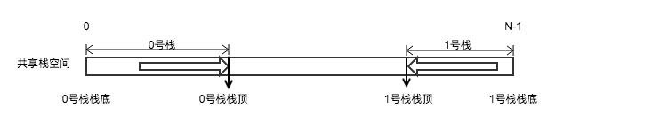

共享栈
1 介绍

判空条件：s.top0 = -1时0号栈为空，s.top1 = N 时1号栈为空
判满条件：s.top1-s.top0 = 1 时栈满
2 出栈入栈操作
#define N 1024 #define elem_type int typedef struct { elem_type stack[N]; int top[2]; }share_stack; share_stack s; bool push(int i, elem_type &x) { if(i != 0 || i != 1) return false; if(s.top[1] - s.top[0] == 1) return false; switch(i): { case 0: s.stack[++top[0]] = x; break; case 1: s.stack[--top[1]] = x; break; } return true; } bool pop(int i, elem_type &x) { if(i != 0 || i != 1) return false; switch(i): { case 0: if(s.top[0] == -1) return false; x = s.stack[top[0]--]; break; case 1: if(s.top[1] == N) return false; x = s.stack[top[1]++]; break; } return true; }